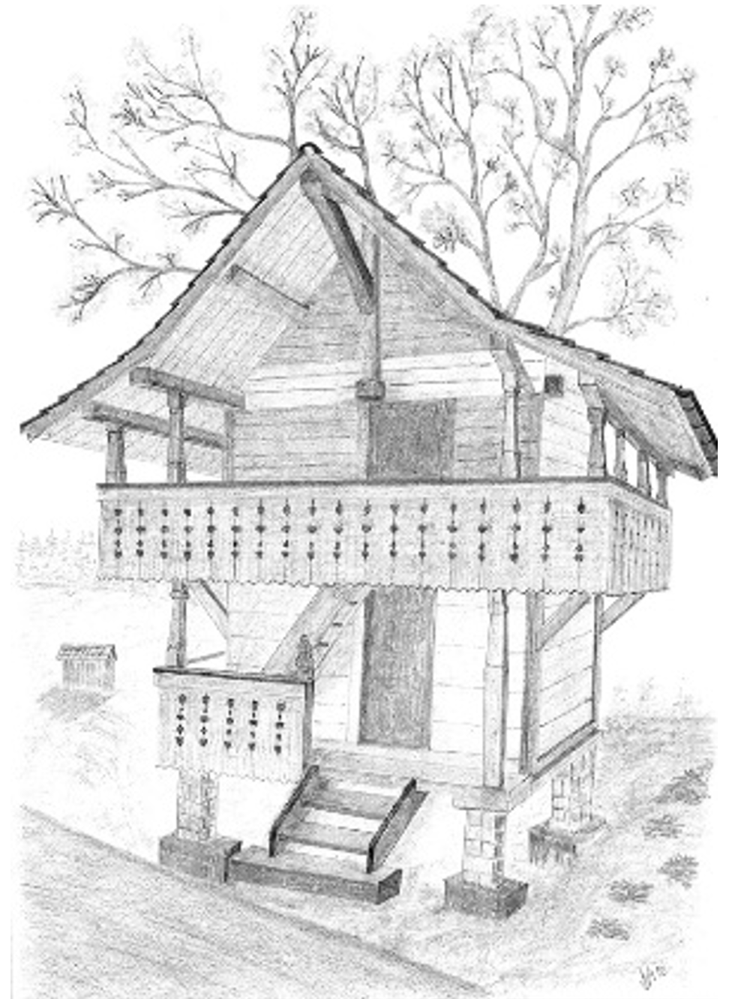

Spycherli Gnúss
Aus Ofen und Garten – vom Hof in Ueberstorf
Hausgemachtes Holzofenbrot und Gartenfrisches, mit Sorgfalt von Hand gemacht.
KontaktAus Ofen und Garten – vom Hof in Ueberstorf
Hausgemachtes Holzofenbrot und Gartenfrisches, mit Sorgfalt von Hand gemacht.
KontaktAuf unserem Bauernhof in Ueberstorf lebe ich zwischen Backofen und Garten. Ich backe leidenschaftlich gern – viel und mit Hingabe – und gebe weiter, was mir Freude macht: ehrliches Brot aus dem Holzofen und Feines aus dem eigenen Garten.
[Hier folgt die persönliche Beschreibung des Betriebs – ein, zwei Sätze über den Hof, das Backen und den Garten.]
Vieles davon gebe ich gerne direkt ab Hof weiter – persönlich, saisonal und auf Anfrage.
— Tamara
Mein Spycherlibrot, langsam gebacken über echtem Holzfeuer – knusprig und aromatisch.
Was im Garten wächst, findet seinen Weg auf den Tisch – saisonal und mit Sorgfalt.
Erhältlich direkt bei uns auf dem Hof – gerne persönlich auf Anfrage.
Frisches Brot und Feines aus Ofen und Garten gibt es direkt bei uns auf dem Hof – am besten einfach persönlich melden.
Kontakt aufnehmen
Ich freue mich auf Ihre Nachricht.